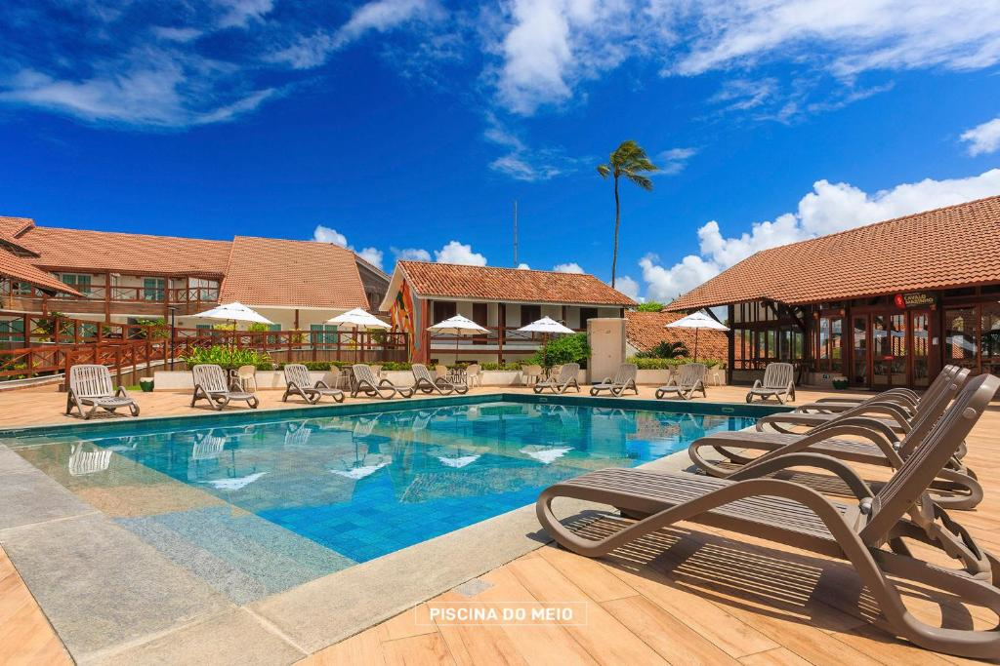
Armação Resort - Porto de Galinhas
Dois quartos, uma varanda e sala de estar
⭐⭐⭐⭐⭐ 4.9
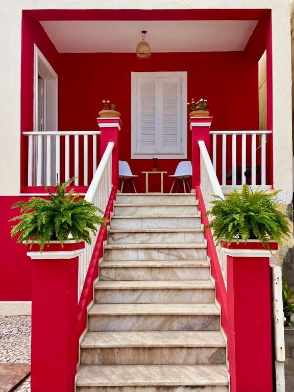
Pousada Flores do Farol - Bahia
Dois quartos, uma varanda e sala de estar
⭐⭐⭐⭐⭐ 4.9
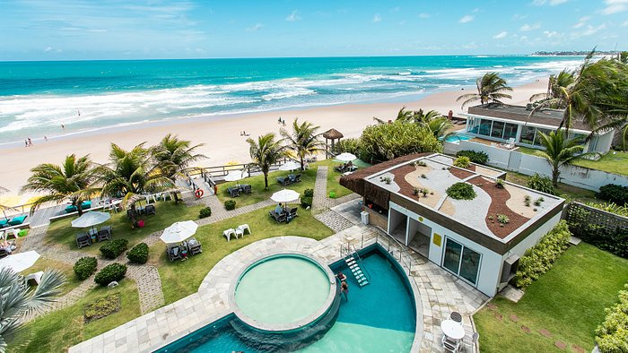
Kembali Hotel - Porto de Galinhas
Com piscina e vista paradisíaca.
⭐⭐⭐⭐⭐ 4.8
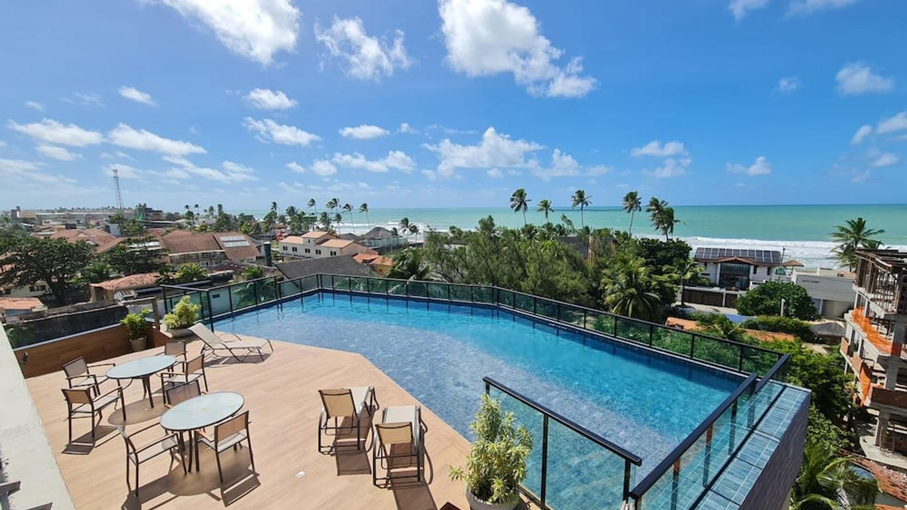
Pousada Amada Terra - Porto de Galinhas
Quarto de frente para o mar.
⭐⭐⭐⭐⭐ 5.0
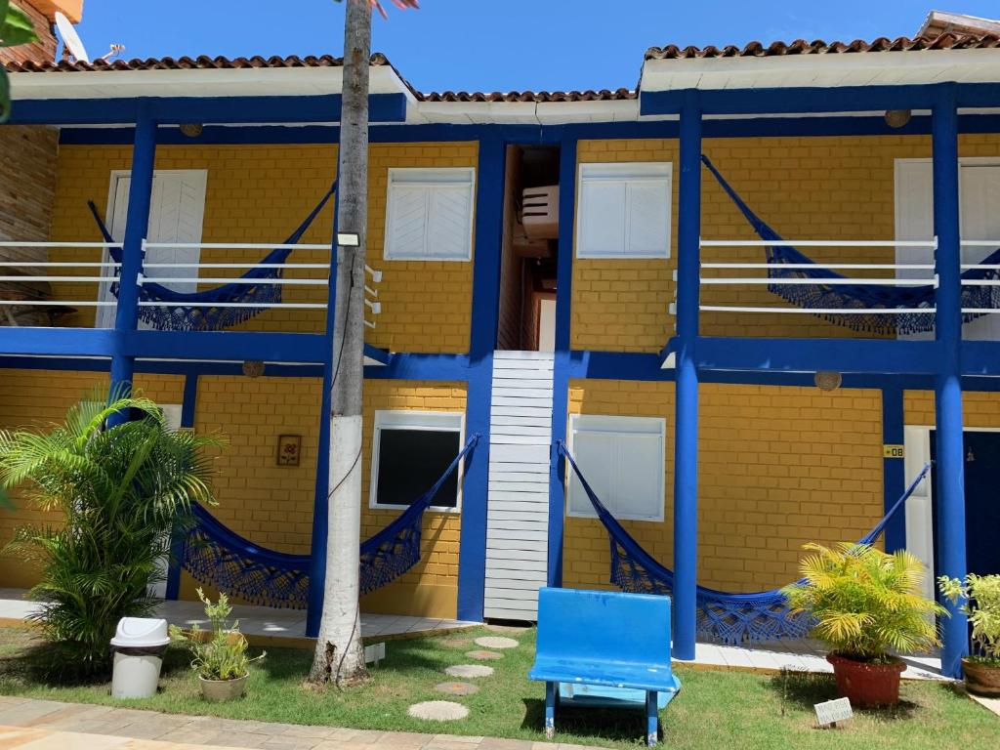
Pousada Girassol - Porto de Galinhas
Dois quartos, varanda com vista de frente para o mar e café da manhã incluso.
⭐⭐⭐⭐⭐ 4.7
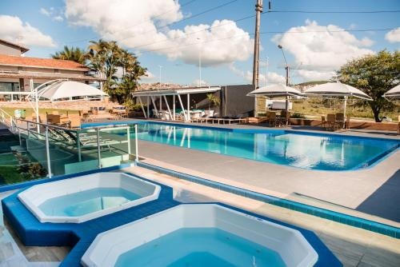
Hotel Village - Porto de Galinhas
Café da manhã incluso
⭐⭐⭐⭐⭐ 4.8
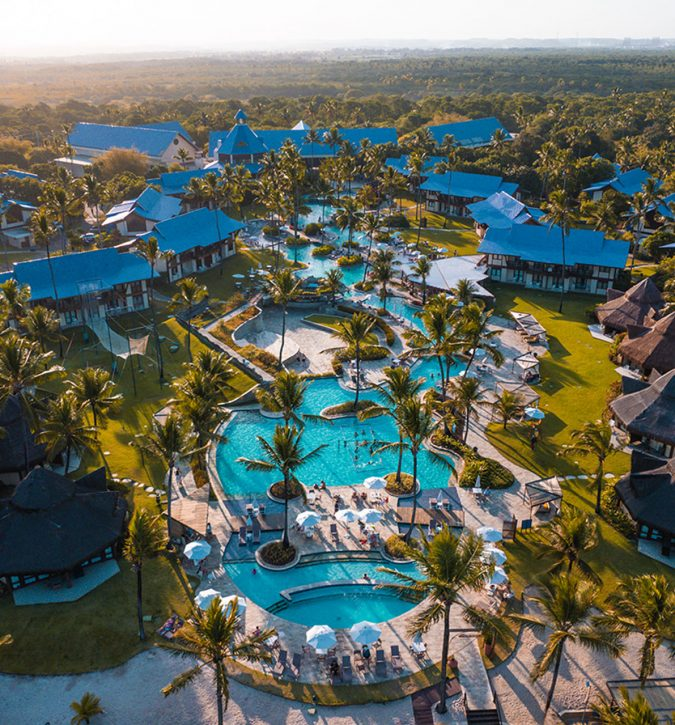
SummerVille - Porto de Galinhas
Um lugar para você se divertir e relaxar com a família! Dois quartos, garagem e sauna individual.
⭐⭐⭐⭐⭐ 4.9
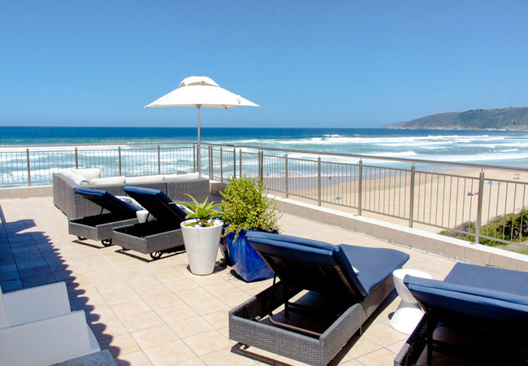
Beach Villa Wilderness - África do Sul
Um lugar para você se divertir e relaxar com a família! Dois quartos, garagem e sauna individual.
⭐⭐⭐⭐⭐ 4.9
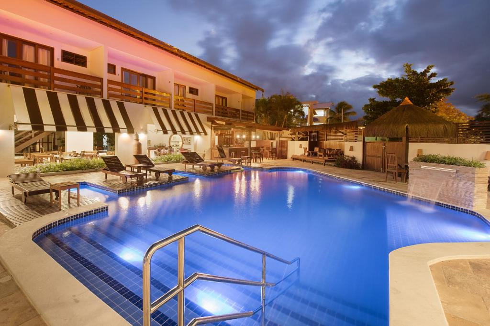
Pousada Quatro Estações - Porto de Galinhas
Dois quartos, área de lazer com campo de futebol e parquinho.
⭐⭐⭐⭐⭐ 4.7
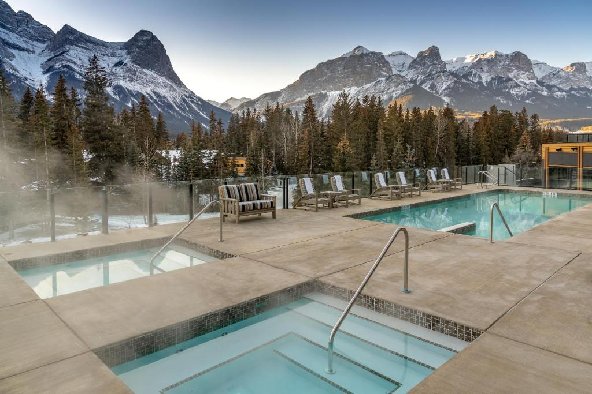
The Malcon Hotel - Canada
Dois quartos, área de lazer com campo de futebol e parquinho.
⭐⭐⭐⭐⭐ 4.7
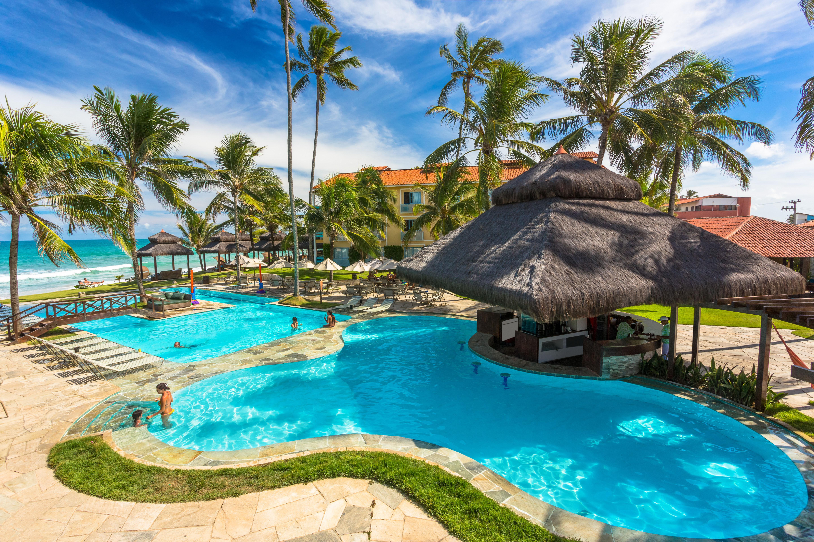
Hotel Solar - Porto de Galinhas
O lugar ideal para quem quer conforto e descanso.
⭐⭐⭐⭐⭐ 5.0
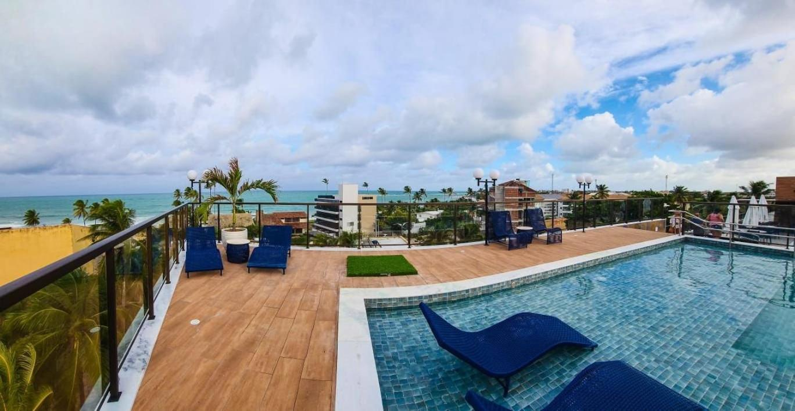
Flat Sol e Mar - Porto de Galinhas
Café da manhã incluso
⭐⭐⭐⭐⭐ 4.7